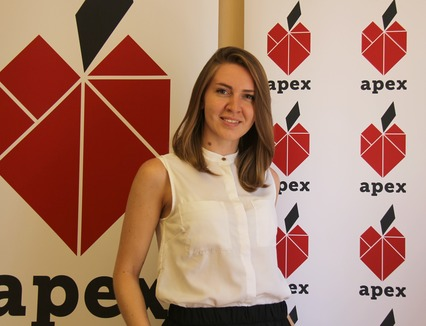

At Atlas Corps, you'll be matched with an organization that best aligns with your interests and professional background.
You get to
For my fellowship, I was matched with Apex for Youth, a community-based organization in New York City. My role was to supervise a mentoring program for underserved immigrant youth from Asian and Asian-American families, many of whom were not fluent in English. That was in line with my first degree in China Studies and Mandarin Chinese, and provided me with an opportunity to work directly with the community in NYC Chinatown as well as attend professional development workshops and conferences.